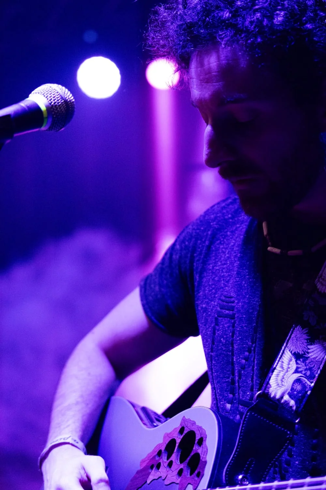
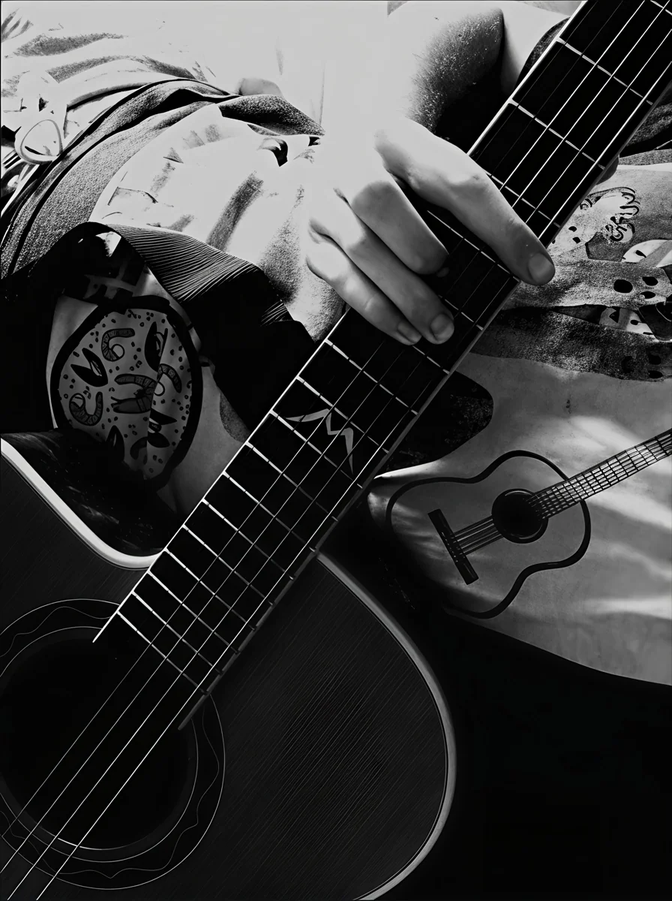
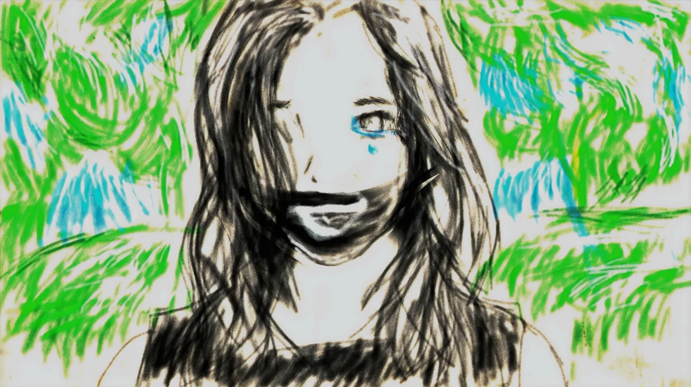
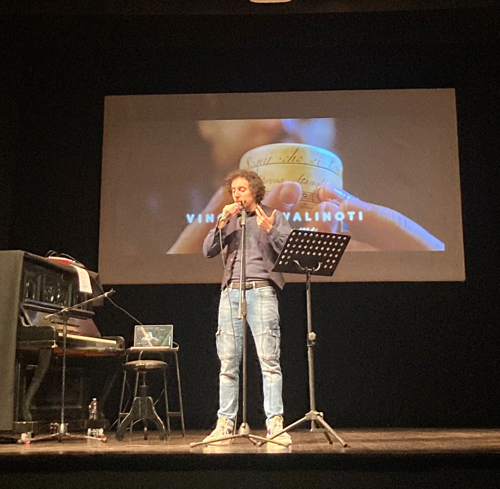
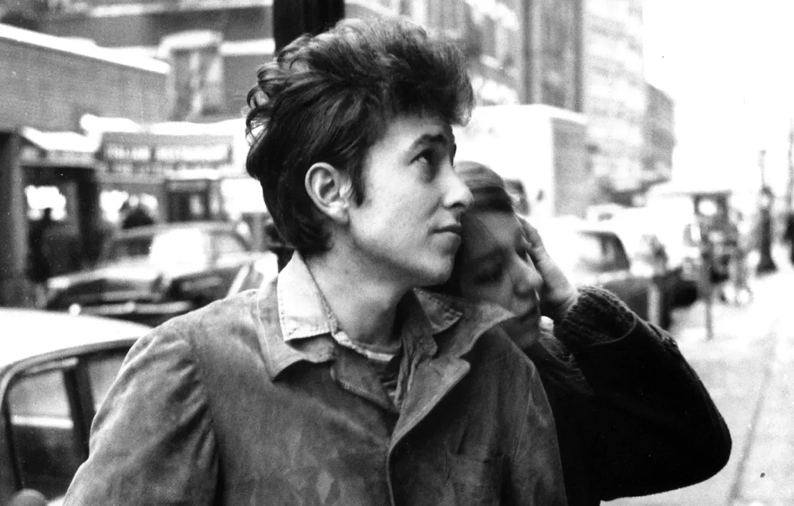
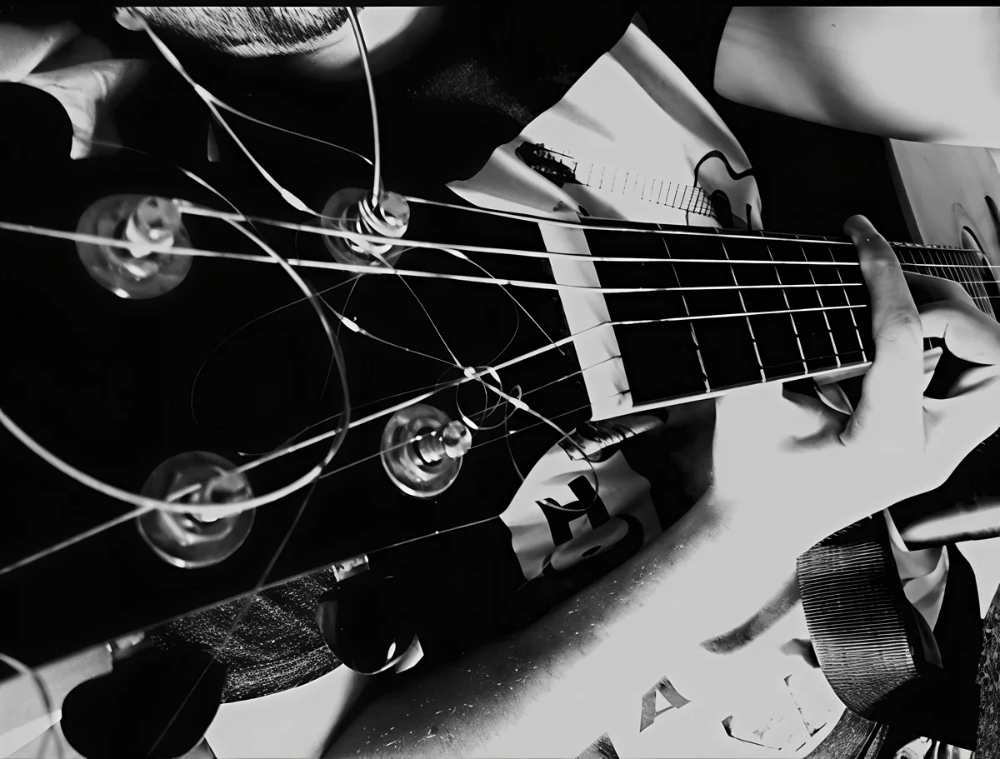

PORTFOLIO ARTISTICO E PROFESSIONALE
Suono.
Immagini.
Idee.
Composizione, prodotti audiovisivi, teatro e ricerca. Linguaggi diversi, un'identità creativa comune.

01 — Esplora
Ogni disciplina, il proprio spazio.
Un percorso consultabile per ambito: ascolta la musica, guarda i video, esplora spettacoli e studi.

01 / Ascolto
Musica
Discografia e collaborazioni
Ascolta
02 / Visione
Audiovisivo
Videoclip, sound design e documentari
Guarda
03 / Scena
Teatro
Spettacoli e rappresentazioni teatrali
Esplora
04 / Immagine
Galleria
Foto, disegni ed esperienze live
Esplora
05 / Studio
Ricerca
Studi, pubblicazioni e AI musicale
Leggi
06 / Contatti
Contatti
Scrivimi02 — In evidenza
Alcuni lavori.
Una selezione di esperienze rappresentative, con rimandi alle sezioni di appartenenza.